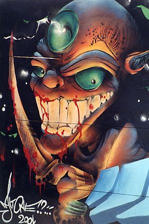

Forums galactiques > Assemblée Galactique : diplomatie officielle > Archives des présentations
| Margrave Respect diplomatique : 20  23/01 ETU 00:47 | Score : 7 Détails * Un hologramme apparut sur les écrans, le buste d'une jeune homme, aux cheveux étrangement colorés, et affichant un léger sourire prit la parole. *
Cher Commandants, je vous propose de créer ici une archive de recensement des Commandants nouveau venus. Cela permettra de nous présenter les uns aux autres, et facilitera ainsi nos interactions... Je vais donc commencer par moi-même, Je suis le Commandant Margrave, Je suis arrivé ici au cours d'un voyage extrasystémique entre ma planète natale et le système où je possédais mon affaire car je suis marchand de métier. Durant le voyage, nos systèmes de navigation et propulsion ont été altérés par une brusque soumission à un bombardement cosmique. Il semblerait que nous ayons été aspiré dans des dimensions supplémentaires... Nous somme restés deux mois à chercher une issue vers l'espace standart, et sommes arrivés ici. Ne pouvant rentrer chez moi, j'ai atterri sur une planète habitée, et ai fini par m'en assurer le contrôle économique, pour le plus grand bonheur de sa population. Je serai très bientôt capable de fournir les commandants le désirant en denrées en tous genres, alors n'hésitez pas... * L'hologramme disparut, seul restait les mots : MESSAGE ARCHIVE * | ||
| lolita Respect diplomatique : -32  23/01 ETU 07:34 | Score : -3 Détails Venu tout droit de la galaxie des exilé, je rennait de mes cendres grace à un clone qui fut envoyer au hasard dans l'espace juste avant ma mort.
Celui ci comporte quelques nouveautés: Il est moins pacifique que l'original et ne possède pas le même profil. Je suis lolita, la guildienne. | ||
| Michiru Juuno Respect diplomatique : 90  23/01 ETU 10:14  | Score : 6 Détails Une image fixe apparait sur les écrans. Une voix fluide et homogène, presque artificielle, se fait entendre:
"Juuno Michiru, du Shinkai, est très honoré d'adresser ses salutations à tous les présents ici, tant physiquement que virtuellement. Il était responsable d'un petit convoi commercial, dans un lieu lointain, quand un dysfonctionnement sans doute similaire à celui subi par le Commandant Margrave l'a arraché à son univers d'origine. Sachez cependant que Michiru ne considère pas cet événement comme un exil, mais comme une immense oppurtinuté. Il quitte en effet une position subalterne dans une petite compagnie, neutre dans un univers ravagé par des guerres incessantes, pour devenir président d'un Haut Conseil planétaire, dans un environnement qui semble apaisé. Il souhaite que lui, sa flotte de commerce et ses quelques escortes, puissent participer au développement local, et remercie les divinités de sa bonne fortune. Commandants, ravi de faire votre connaissance." La communication est coupée. | ||
| Sidden Respect diplomatique : 63  23/01 ETU 10:49 | Score : 5 Détails Bonjour chers commandants venus de toutes parties de l'Univers.
Je me nomme Sidden, fils d'un pauvre paysan d'une pauvre planète où reignait misère et insalubrité. Sur son lit de mort, il m'a fait jurer de devenir l'homme le plus respecté de la planète. C'est que j'ai fait avec l'aide d'un ami. J'étais Premier Président de Mera. Mais l'Organisation Rénégate, par des circonstances peu claires pour moi, m'a enlevé de Mera et mon peuple a été abandonné. Je ne sais plus ce qu'il en advient. Je sais maintenant que je suis Commandant d'une planète dans une Galaxie qui m'est pour le moment inconnue. Je ferais tout pour protéger cette planète, comme j'ai protégé ma Mère auparavant. Je me nomme Sidden, Premier Président de Mera, et je vous souhaite une période de cohabitation et de paix à tous, un commerce prospère et profitable à tous ! Salutations. | ||
| Blast Respect diplomatique : 140  23/01 ETU 11:16 | Score : 7 Détails "un commandant posa un dossier sur lui"
ceci dit: Le Commandant Blast est un defendeur de la Paix, et un Mercenaire, le sens de l'amitier est grand en lui, ainsi que son sens de l'humour qui reserve pour la Taverne. il y a ecrit en bas du dossier: Cordialement le commandant Blast. | ||
| Shinichi Respect diplomatique : -47  23/01 ETU 11:55 | Score : 7 Détails *Un autre hologramme apparut!*
"Bonjour chères commandants, je suis le commandant Shinichi! Je viens à peine d'être majeur mais on m'a elu pour diriger une nation ! Je ne sais pas encore comment procédé mais je vais apprendre en vous regardant commandants ..." *Il regarda sa montre ultra violet et paru surprit* "Desoler je ne peux pas rester , mes ministres attendent pour mon compte rendu de cette reunion! Avec mes salutations" | ||
| Eagle One Respect diplomatique : 4 23/01 ETU 12:27 | Score : 4 Détails Le commandant Eagle One qui fit le deplacement pour siegé dans la nouvelle assemblée se leva puis prit la parole:
"-Commandantes et commandants, Je me presente je suis le commandant Eagle One,seul et unique descendant d'une famille qui regna sur la planete Predator, la planete m'appartenant suite aux assassinats des membres de ma famille!! Je suis et resterai le maitre de ma planete pour dirigé mon peuple faire l'avancé technologique, militaire et vers la conquete spatial qui permettra son epanouissement! Je vous souhaite a toutes et tous une bonne chance dans cette épopée galactique en espérant que la galaxie restera calme aussi longtemps que possible!" Le commandant Eagle One alla s'asseoir dans son fauteuil dans lequel il suivra les discours et actualités de la galaxie | ||
| Heracles Respect diplomatique : 163  23/01 ETU 12:28 | Score : 2 Détails * Un commandant entra dans l'assemblée
"Bonjour à tous, je suis le commandant Heracles. J'étais à la tête d'une petite escadre, en route vers ma planète mère, quand soudain une déformation spatiale m'entraina loin de ma patrie bien aimée. J'ai néanmoins découvert une zone propice à la vie, que je vais essayer de développer pour recréer une zone de paix et de droit." A bientot Commandant Heracles | ||
| Lia Respect diplomatique : 2740  23/01 ETU 12:49 | Score : 7 Détails Le message suivant s'ouvre. Un texte défile:
AVERTISSEMENT! Consultez la description officielle avant toute interprétation erronée de notre commandante! Une femme apparaît alors, et commence son discours. "Salutations. Mon nom n'est pas Lia, et je n'ai aucune autorité pour représenter mon peuple en ces lieux. Présents depuis longtemps dans cette galaxie, nous allons nous cacher aujourd'hui pour formenter massacres et violences, en solitaire. Je suis décidée à bafouer tout gouvernement existant , et à insulter toute personne qui ne voudra pas nouer des relations avec mon peuple. Je ne veux certainement plus jamais entendre parler de vous, et vous fais part de mon profond irrespect. Que la mort soit sur vous." | ||
| Camu Respect diplomatique : 77  23/01 ETU 12:51 | Score : 5 Détails un jeune commandant fit son apparition. Il marchait
lentement et chacun de ses pas résonnait dans l'assemblée. une légère brise semblait l'accompagner en permanence et une traînée froide le suivait. Il portait une magnifique armure qui semblait avoir été fabriquée avec de l'or ainsi qu'une cape bleue. Son visage paraissait serein et il alla s'asseoir pôliment à sa place, après avoir adressé des signes de têtes aux commandants déja présents. | ||
| Empire Kilrathi Respect diplomatique : 242  23/01 ETU 13:29 | Score : 7 Détails La salle de présentation des différents commandants se remplit de silence au moment où entra un individu au physique peu commun.
De même que l'homme descend du singe, ou de quelque primate apparenté, il était clair que l'individu était d'une race qui descendait de quelque grand félin. D'une taille relativement élevée, environ 2 m 30, son physique robuste et sa tête, semblable à celle d'un tigre capable de mimiques, refletaient à la fois perspicassité, sagacité, et... aggressivité. Il commença à s'exprimer d'une voix grave, souvent parasitée de grognements. ************************************************************* Je suis Merluor, Duc de Kilrath, Ambassadeur et Représentant de l'Empire Kilrathi. Nous sommes une race ancienne, prête à défendre ses intérêts par tout les moyens en notre possession. Nous souhaitons afficher clairement notre position vis à vis d'une quelconque confédération ou organisation humaine, qui chercherait à nous imposer leurs lois. L'Empire Kilrathi se réclame indépendant de ce qu'il considèrera comme un empire étranger. Même s'il prennait le nom de gouvernement galactique, nous ne nous sentirons pas concernés lui. S'il cherche à nous imposer quoi que ce soit, nous nous montrerons ouvertement hostile à celui-ci. Nous somme cependant tout à fait ouvert à d'éventuels pactes de non agression, d'alliance militaire ou commerciale, et ce avec tout peuple nous contactant. Nos alliés seront respectés et protégés. Nos ennemis seront exterminés. Les peuples neutres seront ignorés. Je vous prie d'accepter les cordiales salutations de l'Empire. Et souhaite à vos empires de prospérer et... de ne pas chercher à en empêcher le notre. ************************************************************** Se penchant en avant, comme signe de salut, le kilrathi prit place sur un siège de la salle afin d'écouter les divers présentation, saisissant son MPad au cas afin de pouvoir répondre à d'éventuels contacts. | ||
| Sunny Respect diplomatique : 4  23/01 ETU 14:03 | Score : 3 Détails Un commandant qui venait d'écouté les presentations des autres commandants se leva a son tour pour se presenté aussi:
"Chere commandantes et cher commandants, Je suis Sunny, jeune et vaillant dragon, mon pere la roi des dragons Zasa m'a laissé son royaume et je compte bien le faire fructifié et que son expansion profitera a d'autres peuples! Grace a cette expansion j'espere que celle ci me fera une place privilégié au sein de l'assemblée tant au niveau militaire que diplomatique pour me faire respecté des autres commandants envahisseurs et destructeurs de civilisations. Je suis actuellement a la recherche de commandants de la federation, de la guilde ou de l'alliance qui me seront loyaux et de confiance pour nous permettre de gardé cette galaxie sous paix et liberté!merci de me contacter si vous etes interessé" Le commandant Sunny qui venait de terminé son discours de presentation alla se rasseoir sur un siege (qui sentait encore le neuf) et continua a écouté les discours des autres commandants en esperant que son intervention a captée l'intention de commandants | ||
| Jarl Respect diplomatique : 3  23/01 ETU 14:44 | Score : 3 Détails
Salut à vous respectables diplomates de l'assemblée galactique ici réunie. Née de la nature, détruite par les hommes, notre civilisation renait de ses cendres dans cette galaxie nouvellement créee par la main de Dieu. Nous esperons que les débats de l'assemblée seront épris de sagesse et de respect pour le gouvernement du système 0. Le commandant Jarl. | ||
| Ash Respect diplomatique : 434  23/01 ETU 14:56 | Score : 4 Détails Bonjour commandants,
Apres que la planete dans laquelle j'ai ete "emprisonne" ait explose, mes cendres se sont reunies, et je suis revenu a la vie. Ayant vu une sonde d'exploration passer dans les parages, j'y ai saute, et ai pris la place du pilote, que j'ai tue, mais malheureusement, j'ai endommage le tableau de bord, ainsi je me suis trouve perdu dans l'espace, apres quelques jours d'errance, ma sonde fut percutee par un croiseur lourd amiral, ce qui m'a propulse dans cette galaxie, ou j'ai atterri sur la planete Azor. Ainsi, me voila a nouveau, mais cette fois, j'ai perdu mes pouvoir de mutation, ainsi je ne peux plus renaitre de mes cendres, ou bien me forger un autre corps. Je suis diplomate, mais ai recours quelque fois aux armes, mais je peux etre aussi docile qu'un ours en peluche si l'on ne me fait rien. Merci d'etre dans cette galaxie et de participer a l'assemblee. Cependant, il est dommage que l'assemblee soit encore en construction, car j'aimerai bien m'asseoir sur les futurs sieges qui seront places a la droite de cette assemblee. Ash | ||
| Alonzo Vieni Respect diplomatique : 188  23/01 ETU 16:10 | Score : 6 Détails Suivant le panneau "archives des présentation", le commandant Alonzo Vieni se dirigea vers une salle où la poussière n'avait pas encore eu le temps de s'accumuler...
" Des archives en notre honneur ... quelle excellente idée commandant Margrave ! Vous me voyez là devenir votre débiteur." Alonzo salua dasn le vide - peut-être une vieille coutume d'un temps oublié... à moins qu'il n'ait pas remarqué être seul dans cette section de l'assemblée. "Mes origines sont aussi illustres que tragiques... Dès ma plus tendre jeunesse, je fus en compagnie de mes deux frères et de mon unique soeur, sur les ordres de père, formé au pouvoir et aux rigueurs de l'étiquette dans la plus strice confidentialité. Très jeune je perdis ma mère. Je ne l'ai guère connu ; mon père, craignant une éventuelle trahison, la fit disparaître peu après la naissance de mon frère cadet. Ce père, dont il me faudra, un jour, dépasser la gloire, était dans la galaxie des exilés, un commandant tant respecté que paranoïaque. Son suicide fut pur nous, ces enfants, un dur coup du sort, un de ceux qui révèle les tempéraments... Nous fûmes dépassés et séparés par la désintégration de son empire. C'est ainsi qu'avec quelques vaisseaux, j'atteris, sous le regard bienveillant de la Fortune, dans cette nouvelle galaxie... Puisse la chance et le succès continuer à me sourire ! Alonzo Vieni | ||
| Be'lakor Respect diplomatique : 132  23/01 ETU 17:07 | Score : 0 Détails Je sui Be'lakor,créé en enfer dans le feu et le sang..
Mes aptitudes martiales et mes pouvoirs m'ont permis de m'élever au rang de démon majeur,et je fus placé au commande des forces du Chaos.. Cependant mon but n'est pas de détruire cette galaxie,mais de faire s'implanter la race des démons parmis les humains,quitte à élever ces derniers au même rang que nous.. Certains humains nous ont déja rejoint,et pourront ainsi défendre leur liberté face à certains commandants voir face à certains gouvernement! Le chaos n'est pas symbole de destruction,mais de liberté.. Je suis désolé de ne pas pouvoir vous présentez Brise-âme, mon épée, une arme forgée avec l'âme des plus grands démons.. | ||
| Dr.Machiavel Respect diplomatique : 651  23/01 ETU 18:36 | Score : 2 Détails Enchanté,
Dr.Machiavel, Voici ma Description : Terroriste dans l ame, ma seul ambition est la victoire du mal sur le bien tant a l echelle galactique qu'a l echelle individuelle, et le regne de la terreur. Philosophe a mes heurs, héritier du fanatisme galactique, j obtiens un docteras en chirurgie de masse apres avoire fait exploser ma planéte natal a l age de 12 ans. Soucieux de forme les prochaines generations au terrorisme et toute fourberie artistique, je fonde mon Universite, afin de dejouer la regle du manicheisme , et que seul la theorie de l obscurantimse ou le mal regne sur le bien existe. J'annonce donc la création de l'Université du terrorisme, un questionnaire sera a remplir pour ceux qui souhaite y adhéré. | ||
| Jésus Respect diplomatique : -7  23/01 ETU 19:41 | Score : -5 Détails Je suis Jésus, le christ en personne.
| ||
| CrazyFleutin Respect diplomatique : 196  23/01 ETU 19:45 | Score : 4 Détails Salutations à tout le monde ; je me présente ; je suis craziFleutin ; le frere de DarkFleutin ; je reviens de loin pour me presenter ...
Je suis un commandant certes un peu fou mais fidele envers mes alliés et mes camarades... Cordialement cdt Fleutin ;deuxieme du nom. | ||
| Jésus Respect diplomatique : -7 23/01 ETU 19:59 | Score : -5 Détails Tu a l'air sympatique.
J'aime ta psychologie. |
Forums galactiques > Assemblée Galactique : diplomatie officielle > Archives des présentations